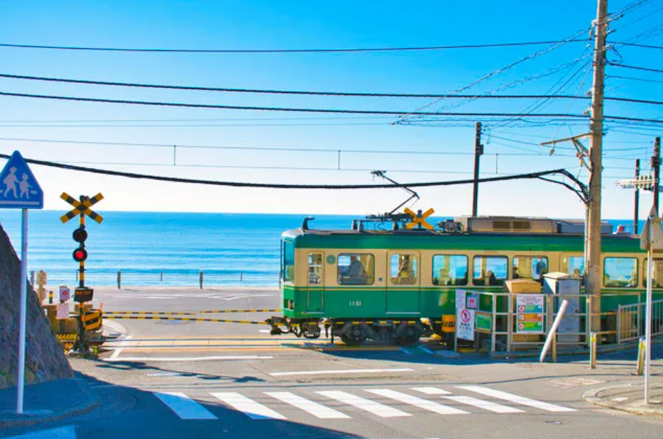
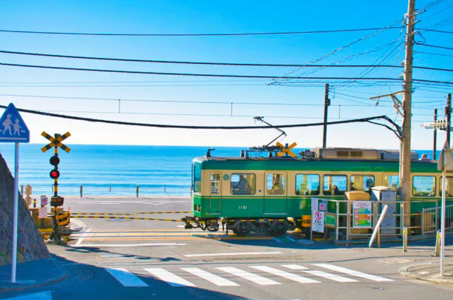

Kamakura
Kamakura is a historic town featuring the iconic Great Buddha, charming temples, and sandy beaches. Only an hour from Tokyo by train, Kamakura shines in spring (March–May) with cherry blossoms enhancing its picturesque appeal.
Kamakura is a historic town featuring the iconic Great Buddha, charming temples, and sandy beaches. Only an hour from Tokyo by train, Kamakura shines in spring (March–May) with cherry blossoms enhancing its picturesque appeal.
